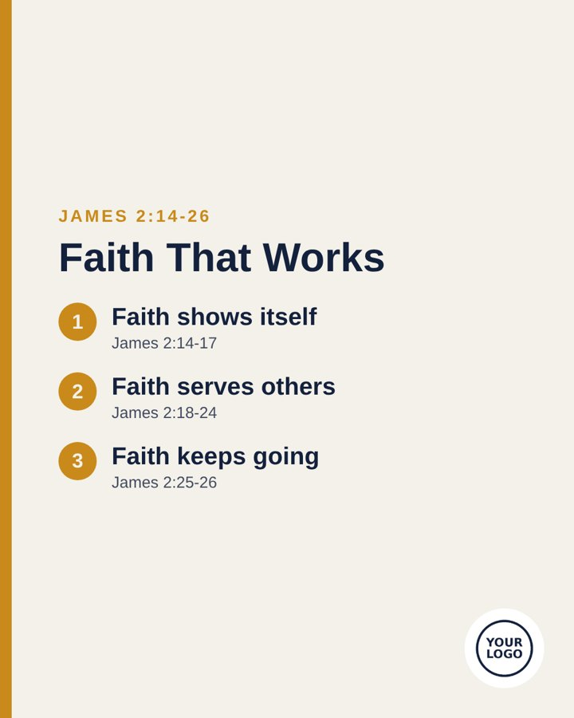
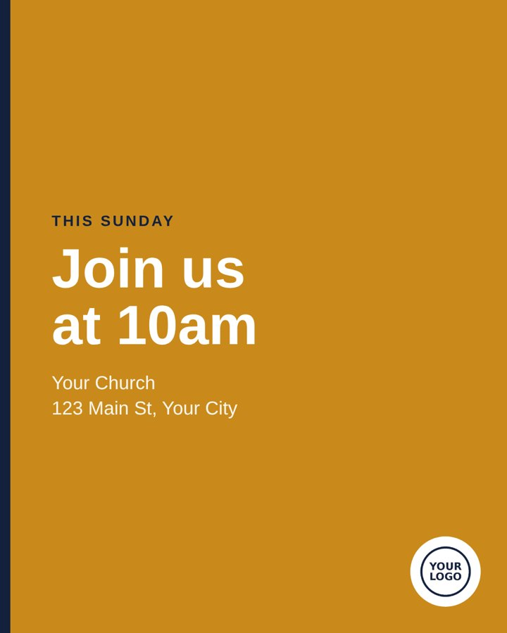

Your sermon, shared all week.
Keep livestreaming or posting your sermon to YouTube like you already do. We turn it into a week of quote graphics, captions, a recap and short video clips, and post them to your church's Instagram and Facebook. Nobody on your staff has to make a thing.
Free sample, no payment info. $79/month after that, cancel anytime. Livestream? Your week of posts is usually ready a few hours after the service.
Sunday's message deserves more than one Sunday.
Your pastor spends hours on every sermon. Then it goes up on YouTube and most of the week, your church's Instagram and Facebook stay quiet, because someone would have to rewatch it, pick the best lines, design graphics, cut clips and write captions. Most churches don't have that person, and the ones that do are stretched thin.
Pulpit to Post does that work for you, every week, from the video you already post.
You preach. We handle the rest.
Get a free sample
A 1-minute form. Usually within a few hours, we email you a private page with posts made from your most recent sermon. Nothing gets posted.
Subscribe if you like it
$79/month through Stripe. No setup fee, no contract.
Connect your pages
One time, about 5 minutes. You approve access on Facebook's own screen. You never share a password.
Keep preaching
When a new sermon shows up on your YouTube channel, the week's posts are made and scheduled. If you livestream, they're usually ready within a few hours of the stream ending.
A week of posts from one sermon
Built from your sermon, in your church's colors, with your logo.


Layout examples with sample text. Your posts use your pastor's actual words and your real church details.
If your sermon goes up later in the week, the same posts are fit into the days that are left.
Built to be trusted with your church's name
- Real quotes only. Every quote is checked word for word against the sermon. Anything that doesn't match is thrown out.
- The right person gets credit. Guest preacher this week? We go by your video title, description and the sermon itself. If it isn't clear, posts credit your church instead of guessing.
- Nothing out of context. Jokes, side comments and lines that only make sense with what comes next are left out.
- Approve first if you want. Get the week's posts by email and approve them, or let them go out on their own. Switch anytime.
- No passwords. You approve posting access on Facebook's own screen and can remove it with one click in your settings.
- Adds to what you post. Your own announcements and events stay yours. We add sermon content alongside them.
Done for you, not another tool to learn
| Doing it yourself | Sermon clip apps | Pulpit to Post | |
|---|---|---|---|
| Who does the work | A staff member or volunteer, every week | Someone uploads, picks and publishes | Nobody. Post to YouTube and you're done |
| Graphics, clips, captions | Made by hand | Mostly clips | All of it, in your colors |
| Posting | By hand | Usually by hand | Scheduled across the week for you |
| Cost | Hours every week | Roughly $10–$130/month plus staff time | $79/month |
One simple price
- Every sermon you post on YouTube, every week
- Quote graphics, main points, recap, Saturday invite
- Up to 3 short captioned video clips a week
- Posted to your Instagram and Facebook, or sent to you to approve first
- No setup fee, no contract, cancel anytime yourself
Secure checkout by Stripe. Already filled out the sample form? Use the same email at checkout. Haven't yet? After you subscribe, you'll be asked to fill it out.
Questions churches ask
Do we have to do anything each week?
No. Keep livestreaming or uploading your sermon to YouTube. We check your channel through the day, especially Sunday afternoon and evening, and make the week's posts as soon as a new sermon appears. For livestreams that's usually within a few hours of the stream ending.
Can we post to just Instagram or just Facebook?
Yes. Choose Instagram, Facebook, or both when you connect your accounts, and change it anytime.
We livestream the whole service. Is that a problem?
No. We find where the sermon starts and ends and skip the music, announcements and offering.
What if we have a guest speaker?
We credit whoever actually preached, based on your video title, description and the sermon itself. If it isn't clear, posts credit your church rather than guessing a name.
Can we see posts before they go out?
Yes. Choose "approve first" and you'll get each week's posts by email to approve. You can switch to automatic posting anytime.
Do you need our Facebook or Instagram password?
Never. You approve posting access on Facebook's own screen, the same way you'd sign in to any app with Facebook. You can remove that access anytime in your Facebook settings.
Will this replace what we already post?
No. Your events, announcements and photos stay yours. We add sermon posts alongside them.
What if we don't post sermons on YouTube?
Right now we work from YouTube. If your sermons are somewhere else, tell us on the form and we'll let you know.
We subscribed without getting a sample. What now?
Fill out the setup form using the same email you subscribed with. That's how we match your subscription to your church, and it's where you tell us about your sermons and preacher.
How do we cancel?
Cancel yourself anytime from Manage subscription. Enter the email you subscribed with and Stripe sends you a sign-in code. Posts continue until the end of the period you already paid for.
Fair and simple
Subscriptions renew monthly or yearly, depending on the plan you choose. Cancel anytime yourself from Manage subscription. You keep your posts until the end of the month or year you already paid for, and you won't be charged again. Monthly subscribers can switch to yearly there too, and you can update your card and see invoices.
Refunds: if a week's posts aren't made because of a problem on our end, email us and we'll refund that week. Yearly plans: changed your mind? Email us within 30 days of paying for a full refund.